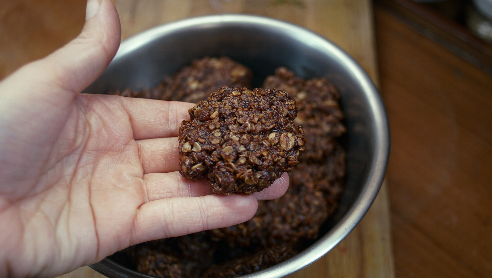

stovetop choco oat cookies
15 cookies — 10 minutes
These days, I've been experimenting with baking without an oven. This limits what recipes we can make, but also gives us plenty of opportunities for learning how to do things differently.
We prepared the 'dough' on the stovetop, using a cast-iron pan. Any kind of pan will do, we just really like cast iron. The resulting texture is very moist compared to a traditional cookie, but it is very delicious and requires few tools to prepare.
Recipe notes:
Oats: Only use quick-cooking oats, as rolled oats or steel-cut oats will not absorb moisture as quickly, and the 'dough' won't bind. Making your own quick-oats is easy, just pop some rolled oats in a blender, or pulverize with a mortar and pestle. Don't overblend, as you'll end up with oat powder.
Vegan butter: Vegan butter adds flavor. It's possible to substitute with coconut oil, but it will alter the flavor. To make your own vegan butter, look for the recipe in The Homemade Vegan Pantry by Miyoko Schinner. It's possible to omit the butter entirely and to double the quantity of peanut butter.
Cocoa powder: If you have a sensitivity to caffeine use carob powder instead. Switching to carob will alter the flavor of the cookie — in a good way.
Sugar: You can substitute with any other kind of sugar, but if you choose to add commercial brown sugar reduce the added water content (a little).
Soy milk: We make this recipe with just water often, but adding soy milk (or any other nut milk) makes for a richer flavor.
Peanut butter: We like peanut butter a lot, so we add it in everything. We use 100% peanut butter. If you use a sweetened variety, you can use less sugar.
 vegan butter110 g
vegan butter110 g peanut butter120 g
peanut butter120 g soy milk125 ml
soy milk125 ml granulated sugar200 g
granulated sugar200 g cocoa powder20 g
cocoa powder20 g salt1.25 g
salt1.25 g vanilla extract5 ml
vanilla extract5 ml quick oats300 g
quick oats300 g
cookies
- In a pan, combine 110 g (1/2 cup) of vegan butter, 240 g (~1/2 cup) of creamy peanut butter, 125 ml (1/2 cup) of soy milk (or water), 200 g (1 cup) of granulated sugar, 20 g (1/4 cup) of cocoa powder and 1.25 g (1/4 tsp) of salt. Mix ingredients well.)
- Bring to medium heat, until mixture starts to boil. Stir for 4-5 minutes. Reduce heat to low, add 5 ml (1 tsp) of vanilla extract and 300 g (~3 1/2 cups) of quick-cooking oats. Mix until well incorporated.
- If you don't mind getting messy, pick up bits of cookie dough with your hands, shape into a puck and transfer to a baking sheet, or baking mat (a surface that is easy to wash). Alternatively, you can scoop up an amount with a large spoon and transfer it to a baking sheet, but I prefer to shape the dough with my hands, as it helps to compress the oats into a proper cookie shape.
- Let cookies cool, they'll be easier to handle if you wait.